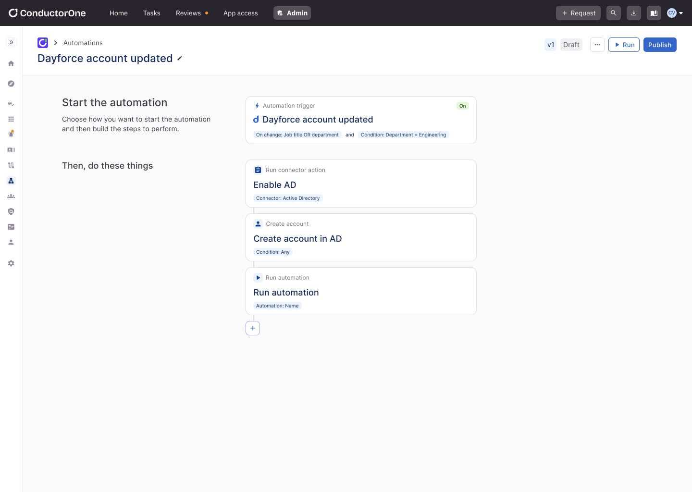
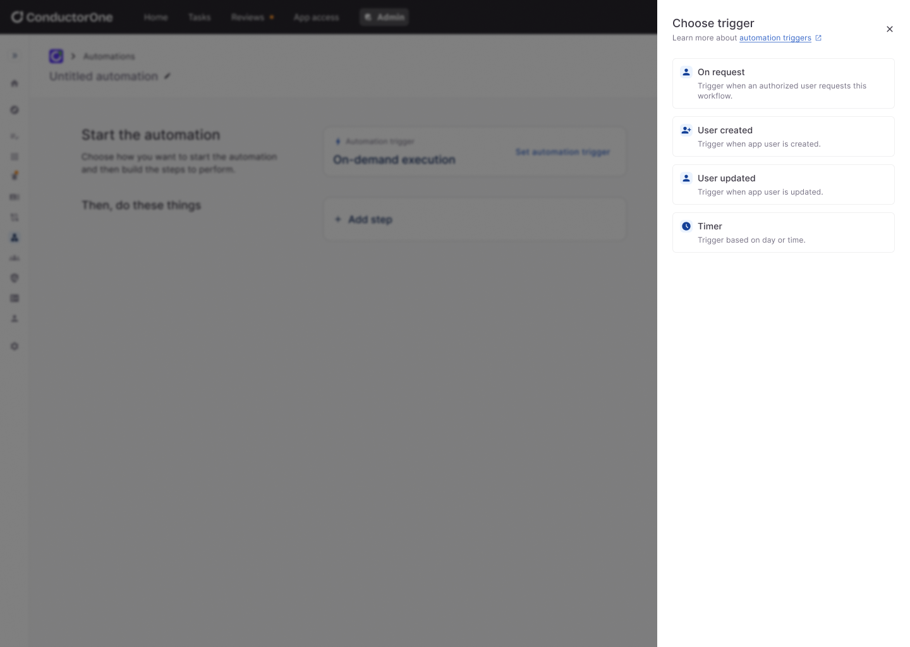
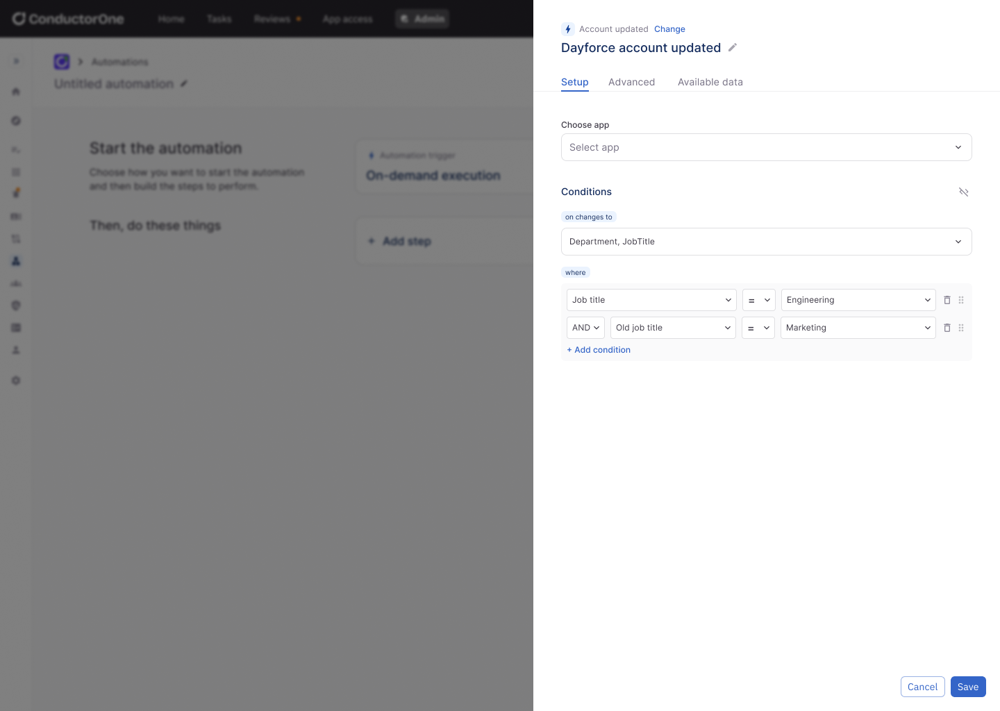
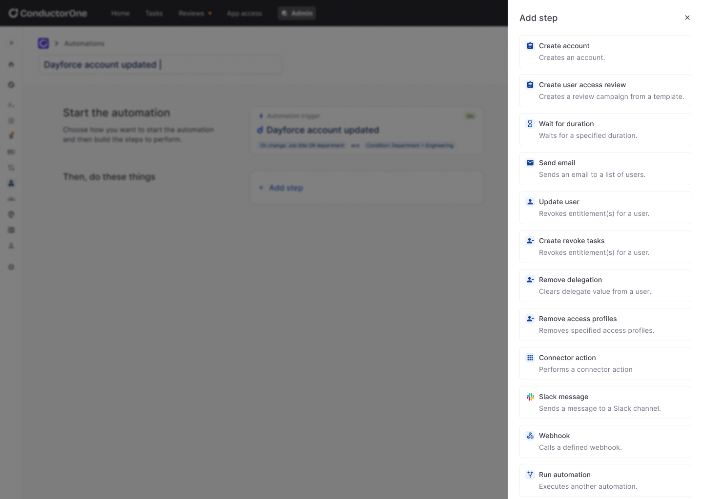
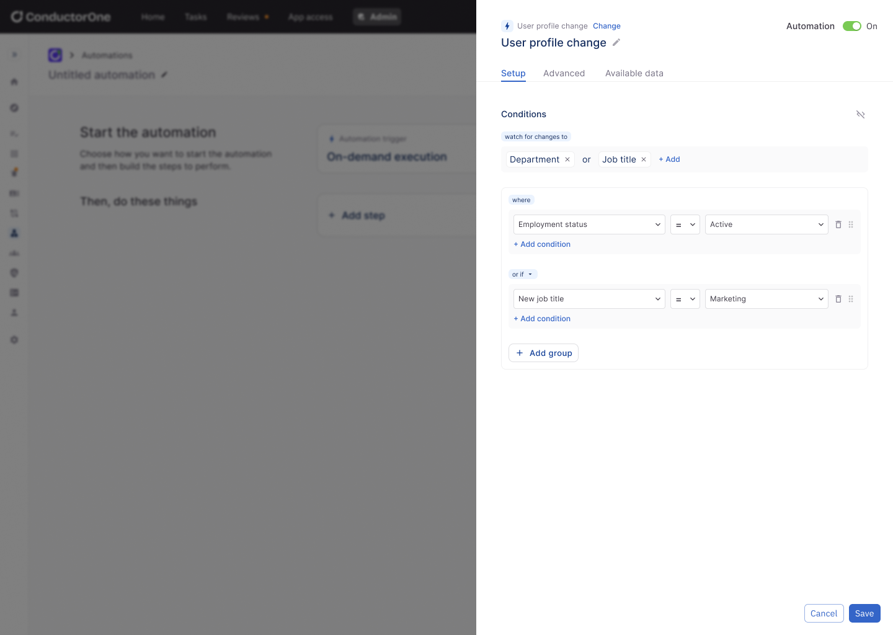
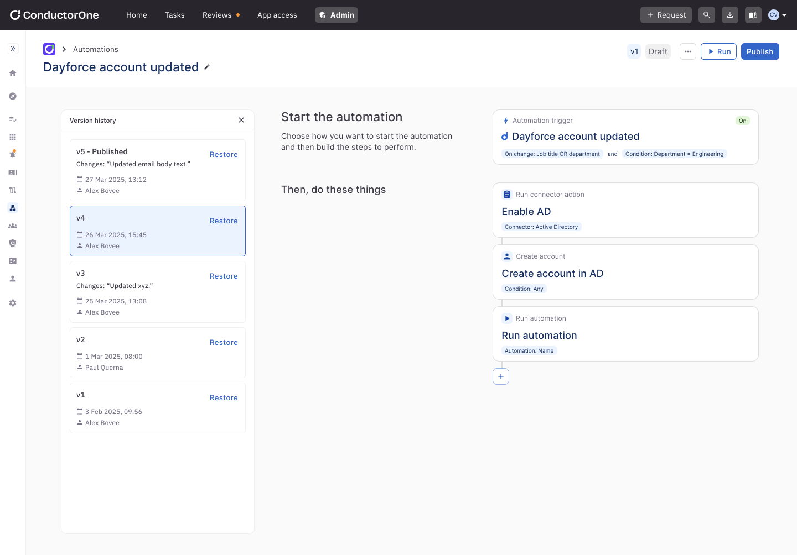
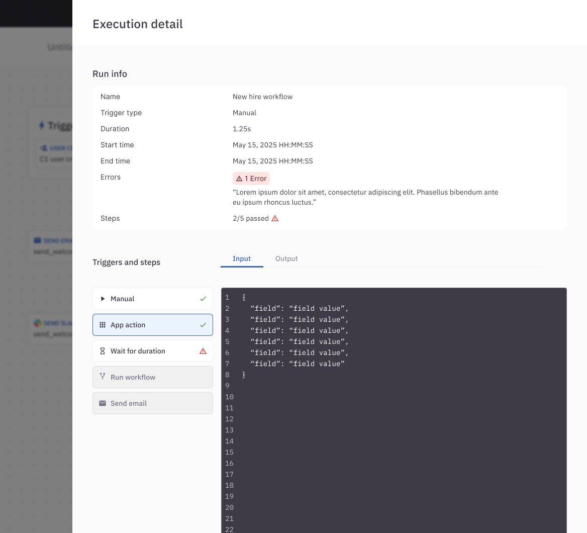

Companies managing complex workflows or large volumes of repetitive tasks often struggle with inefficiencies, human error, and time-consuming manual processes. Without automation, teams waste valuable resources on tasks that could be streamlined—like onboarding users, assigning access, or managing notifications—leading to slower operations and inconsistent user experiences.
With a customer commit and 3-month deadline, we aimed to launch an MVP version of automations and solve the 10 initial use cases provided by the customer.
Manual processes. Teams have to periodically review who has access to what, but the process is often spreadsheet-based or requires chasing down managers.
Long onboarding times. New hires often wait days for the access they need to start working effectively.
Department changes create risk. When employees leave or switch roles, old accounts or permissions may linger, increasing the attack surface.
Access reviews. An automation could trigger periodic access reviews based on a set schedule, notify the right reviewers, and auto-certify low-risk access (e.g., based on usage or tenure), reducing human effort and ensuring consistent review cycles.
New hire. A new-hire automation could detect when a user joins via the HR system and automatically assign access based on department, role, or team—ensuring day-one productivity without manual setup.
Deprovisioning. A deprovisioning automation could listen for termination events and immediately remove or disable access across all systems, preventing orphaned accounts from lingering.
I conducted a competitive audit of leading identity platforms and automation tools to understand how others structure automation capabilities. This included analyzing trigger types, workflow builders, approval flows, and UI patterns across competitors. I documented strengths, usability gaps, and opportunities for differentiation, which helped inform both our feature prioritization and design direction.
Our product manager led multiple sessions with the client to uncover their pain points and goals. This discussion revealed key friction areas—such as time-consuming access reviews, onboarding delays, and a lack of visibility into entitlement changes. These insights gave us a clearer understanding of the client’s day-to-day challenges and where automation could drive the most impact. Together, this research gave us a strong foundation for designing an automation feature that felt both strategic and practical—tailored to real workflows, not just theoretical ones.
Triggers are listeners or events that trigger an automation. We identified four main triggers that would cover a variety of use cases.


Adding steps is a core part of the automation builder experience, giving users a clear, visual summary of what their automation will do. With around 10 step types at launch, we kept the selection simple—presenting a list with short descriptions for quick scanning. As the library of steps grows, we envision expanding this with categories, search, and filtering to maintain usability at scale.

Because the automation builder is designed for flexibility, we introduced a conditional builder for triggers. This allows users to define more granular conditions—like tracking changes to a user’s department or job title—enabling more targeted and precise automations.

To support safe iteration and continuous improvement, we introduced versioning for automations. Each time a workflow is edited and saved, a new version is created—allowing users to track changes over time, revert to previous versions, and maintain a clear audit trail. This gives teams the confidence to experiment and refine their automations without fear of breaking critical processes.

Visibility into automation health is critical for building trust and enabling iteration. To support this, we introduced clear status indicators and error messaging throughout the builder. Users can quickly identify where an automation failed and why, making it easier to debug, test, and improve their workflows with confidence.

We successfully shipped an MVP that met the core use cases requested by our initial customer. Shortly after launch, we expanded the feature set by adding more step types and introduced the ability to scope automations down to a specific application—giving customers greater flexibility and control.